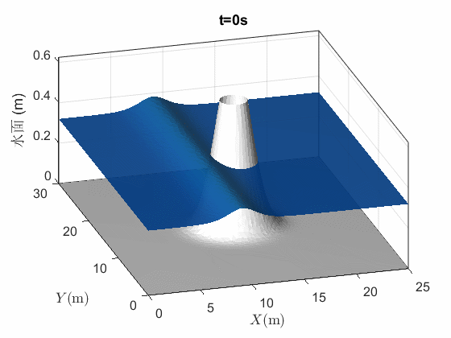
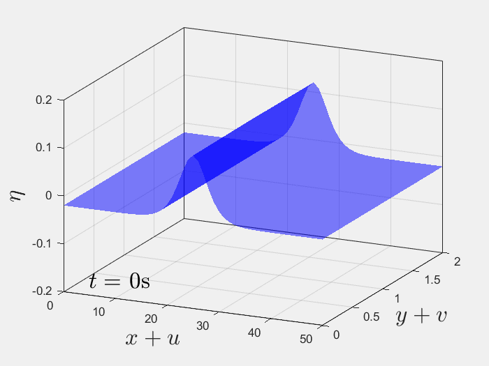
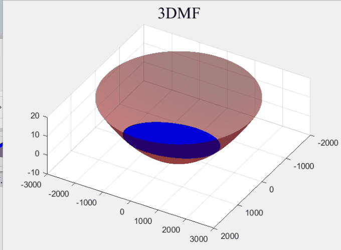
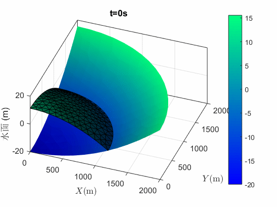

基于位移法浅水波方程的模拟
硕士学位论文模拟 · 浅水波
概述
本页集中展示硕士学位论文研究中完成的浅水波数值模拟动画。相关工作以位移法浅水波方程为基础， 涵盖水波与固体边界干涉、三维水波传播、自由晃动及湖面自由震荡等算例。




硕士学位论文模拟 · 浅水波
本页集中展示硕士学位论文研究中完成的浅水波数值模拟动画。相关工作以位移法浅水波方程为基础， 涵盖水波与固体边界干涉、三维水波传播、自由晃动及湖面自由震荡等算例。



